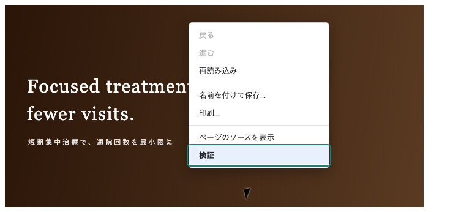
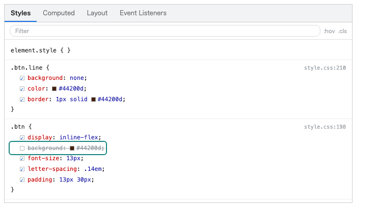
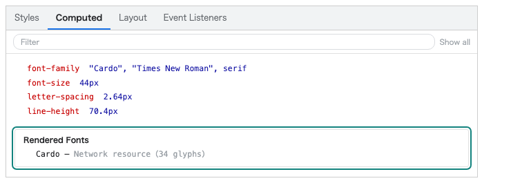
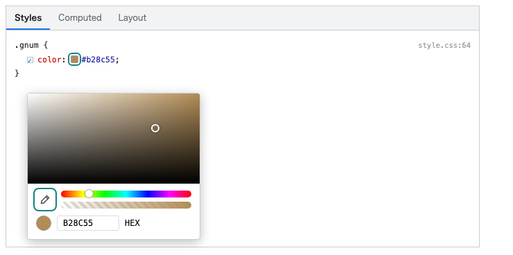
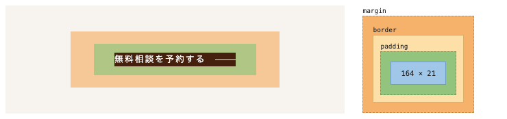
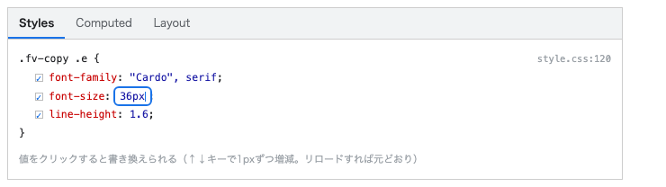

社内のWordPressテンプレート「template_theme」を複製して、デザインカンプを1ページ再現するまでの手順書です。HTMLとCSSが書ければ進められます。PHPは読めなくて大丈夫です——本当です。この手順書のとおりに進めて、詰まったら遠慮なく先輩を呼んでください。
なにを作るのか、どこまでやるのか。最初に全体を見ておきます。1分で読めます。
ゴールは「カンプの再現」です。
配布フォルダの comp/comp-pc.jpg（PC幅1440px）と comp/comp-sp.jpg（スマホ幅375px）が、今回のデザインカンプです。架空の案件「永嶌歯科クリニック」のトップページとして、このカンプと見た目が一致するところまでテーマを作り込みます。実案件のトップページと同じ、約22ブロックのフルボリュームです。
進め方はシンプルで、6章の STEP 0〜9 を順番にこなすだけです。1〜5章はそのための準備と予備知識です。
WordPressの解説書は分厚いですが、今回の作業に必要な知識は3つだけです。それ以外は、必要になったときに覚えれば十分です。
WordPressの見た目は「テーマ」というフォルダで決まります。今回配られる template_theme もただのフォルダで、中にPHP・CSS・JSのファイルが入っています。このフォルダを丸ごとコピーして改造するのが、SLCのサイト制作の基本形です。
テーマの中の .php ファイルを開くと、見慣れたHTMLの中に <?php ... ?> という区間が混ざっています。ここはWordPressが後から中身を流し込む「穴」です。穴の中は今回いっさい触りません。穴の周りのHTMLとクラス名だけを、カンプに合わせて書き換えます。
「どのファイルがどのページになるか」はファイル名で決まっています。今回触るのはトップページ＝ front-page.php だけです。下層（page.php ほか）は次の研修で扱います。
会社で用意している、お名前.comサーバー上のテスト用WordPressを使います。本物のサーバーで動く本物のWordPressです。ただし1つだけ、先に覚えてほしい原則があります。
コードの正本（マスター）は常に自分のPCのテーマフォルダに置き、テスト環境には「zipにして流し込んで表示を見るだけ」という役割分担にします。この形なら、テスト環境がいつ初期化されても失うものはありません。逆に、WordPressの管理画面にある「テーマファイルエディター」で直接コードを書くのは禁止です——手元の正本とズレて、どちらが本物か分からなくなります。
/wp-admin/ を付けるとログイン画面が開きます。開いたら必ずブックマークしてください。本番サイトの管理画面と取り違えないためです。テスト環境URL： ／管理画面ID： ／PW：教育担当の指示に従って保管（この紙には書かない）
触っていいのは自分のテーマだけ。他の人のテーマ・プラグイン・WordPressの設定（パーマリンク以外）は変更しないでください。困ったら手を止めて教育担当へ。
FileZillaなどのFTPソフトで wp-content/themes/nagashima-dc/ に接続すると、変更したファイルだけを転送できて速くなります（FTP情報は教育担当から）。ただし転送先を1階層間違えると他のフォルダを上書きします。まずはzipの基本ループで1周してからにしてください。
正本は手元のフォルダ、テスト環境は確認用。この分担さえ守れていれば、テスト環境に何が起きても被害ゼロです。テーマファイルエディターでの直接編集だけは、絶対にしないこと。
template_theme を「今回の案件のテーマ」に仕立て直します。テーマのREADMEには複製チェックリストが14項目ありますが、今の時点で全部やる必要はありません。
nagashima-dc という名前にします。以後、このフォルダがあなたの正本です。Theme Name: を「永嶌歯科クリニック」に、Description をひとこと案件の説明に変えます。WordPressはこのコメントを見てテーマを認識します。テーマのコードには ▼▼ 案件ごとに書き換え ▼▼ というコメントが計18箇所埋まっています。エディタの全体検索で「案件ごとに書き換え」を検索してみてください——書き換えるべき場所の一覧がそのまま出てきます。暗記は不要で、検索すれば全部見つかるようにテーマが作られています。
| READMEのチェックリスト | いつやるか |
|---|---|
| 1. フォルダ名／2. テーマヘッダー | 今やりました（上のSTEP） |
| 3. PCナビ／4. SPドロワー／5. フッター／6. カラーパレット／7. ベースフォント／8. Webフォント／11. ロゴ／13. パーマリンク再保存／14. 残りチェック | 6章の演習の中で順番にやります。それぞれのSTEPで案内します |
| 9. GA4/GTM／10. JSON-LDの医院情報／12. screenshot.png | 今回はやりません（本番反映とセットの作業なので、次の段階で） |
怖がらせたいわけではなくて、逆です。「ここ以外は壊しようがない」と分かっていたほうが、思い切って書けます。
css/style.css色の定義（:root）とトップページのスタイル。一番よく触るcss/basic.cssベースフォント・見出しの共通スタイルfront-page.phpトップページのHTML骨格。「穴」以外の部分parts/menu-header-pc.php / menu-header-sp.phpヘッダー・ナビ・SPドロワーのHTMLfooter.phpフッターのHTMLfunctions.php の58行目付近だけWebフォント読み込みのコメントを外す1箇所のみimages/ロゴや画像を置く場所css/reset.css全ブラウザの表示を揃える土台。触ると原因不明のズレが起きるfunctions.php の58行目付近以外投稿タイプやサイトマップの機能定義。1文字のミスでサイト全体が真っ白になるsrc/・build/専用ブロックのプログラム。ビルドという別工程が必要metabox/GA4や構造化データの記入場所。本番反映時に先輩とやるcss/under.css・archive-news.css下層・一覧ページ用。今回は出番なし（壊れはしないが触る必要がない）もし「ダメ」側を触って画面が真っ白になっても、手元の正本フォルダが無事なら元に戻せます。8章のつまずき集を見てください。
コードを書き始める前に、カンプ2枚（PC・SP）を開いて眺めます。実案件でもカンプは「画像＋この章のようなスタイルガイド」のセットで渡されます。章の終わりに、実案件で必ず出てくる「足りない素材の作り方」も付けました。
色をスポイトで拾う必要はありません。実案件でもカラーコードはデザイナーから指定されます。今回の指定は次のとおりです。
| CSS変数 | 値 | 使いどころ |
|---|---|---|
--c-primary | #44200d | メインの濃茶。見出し・ヘッダーの電話ブロック・フッター背景 |
--c-accent | #b28c55 | 金茶。見出し脇の短い罫線・英字ラベル・日付 |
--c-cta | #44200d | 電話などのボタン地色（メインと同色） |
--c-cta-hover | #1f0e07 | ボタンのホバー時。濃くする |
--c-bg | #ffffff | ページ背景の白 |
--c-surface | #eee2db | ベージュの色面。FV・お知らせ帯・アクセス帯の背景 |
--c-border | #e2dfdd | 1pxの罫線ぜんぶ |
--c-text | #333333 | 本文の文字色 |
--c-text-muted | #7f7f7e | 補足・注釈の文字色 |
--c-primary-d（追加） | #3a2619 | 濃茶の面。「強み」「フッター」などの帯背景。テーマの9変数に2行追記する |
--c-accent-d（追加） | #8b652f | 金茶の濃色。アイコンの線・番号など |
| 項目 | 指定 |
|---|---|
| 見出しフォント（和文） | Shippori Mincho（Google Fonts）。h2・h3と医院名に使う |
| 英字フォント | Cardo（Google Fonts）。セクションの英字ラベル・電話番号・日付に使う |
| 本文フォント | 游ゴシック体のスタック（Webフォント不要）："游ゴシック体", "Yu Gothic", YuGothic, "Hiragino Kaku Gothic Pro", "メイリオ", Meiryo, sans-serif／15px・行間2・字間0.05em |
| Google Fonts のURL | https://fonts.googleapis.com/css2?family=Cardo:ital@0;1&family=Shippori+Mincho:wght@500;600&display=swap（STEP2で使います） |
| コンテンツ幅 | 最大1200px。テーマに .mw1200 という既製クラスがあるので、セクションの内側に付けるだけでOK |
| ブレークポイント | 768px（テーマ共通）。SP用のスタイルは @media screen and (max-width: 768px) にまとめる |
| 斜めパターン背景 | ベージュ地 #f2ece5 に、45度と135度の linear-gradient を2枚重ねて大きな斜めの色面を作る（画像は使わない）。作り方が分からなければ講師に聞いてOK。ここは詰まりやすいポイントです |
実案件では「このサイトみたいな雰囲気で」と参考サイトを渡されることがよくあります。そのとき、見た目から作り方を推測する必要はありません。ブラウザの開発者ツールで答えを直接見ることができます。今回の演習でも「カンプのこの部分、どう作るんだろう」と思ったら、似た作りのサイトで同じことをして構いません。

.btn.line の background に負けた行に取り消し線が付いています）。右端の「style.css:198」は書いてある場所です。




参考サイトから読み取っていいのは、値と仕組み（色・余白・フォント指定・レイアウトの作り方）までです。CSSやHTMLを丸ごとコピーして流用しない。写真・イラスト・アイコン・背景画像は1枚たりとも流用しない（著作物です）。文章もコピーしない。このラインは実案件では会社の信用に直結します。迷ったら講師に聞いてください。
この研修では背景はCSSだけで作り（カンプの斜めベージュは linear-gradient を2枚重ねただけです）、写真は配布素材を使います。ただし実案件では「この帯にちょっと質感がほしい」「バナーの下地が足りない」が必ず出ます。そこで素材サイトを延々と探すより、ChatGPTの画像生成で作ってしまうほうが速い——これが今の会社の推奨です。ただし万能ではないので、使い分けを先に決めます。
linear-gradient / repeating-linear-gradient で作れます。CSSで足りるならそのほうが軽く、色も後から1行で変えられます。画像に頼るのは「質感」が要るときだけ。repeat して継ぎ目を見る。生成画像は完全なシームレスになりにくく、ここで諦めてCSSに戻る判断もよくあります。Webサイトの背景に敷く画像を作ってください。
サイズは1024×1024の正方形。上下左右がつながって、タイル状に繰り返せること 柄は45度の斜めストライプ。太さは均一、境目はくっきり 地の色は #F2ECE5、ストライプは白を半分の濃さで重ねた程度の、ごく弱いコントラスト フラットな塗りで。写真的な質感、立体感、影、グラデーションは入れない 文字・ロゴ・イラストは一切入れないWebサイトのセクション背景に敷く、紙の質感の画像を作ってください。
サイズは横1600×縦1000 和紙のような細かい繊維の質感。遠目には無地に見える程度の弱さで 色は全体に #F7F3EC 前後の生成り。色ムラは弱く 四隅を暗くするビネットは付けない。中央と端の明るさを揃える 柄・模様・文字は入れない歯科医院のWebサイトで使うバナーの背景画像を作ってください。
サイズは横800×縦500 明るく落ち着いた診療室の情景。人物・顔・手は写さない 色はベージュと白木の暖色でまとめ、彩度は低め 左半分に文字を載せるので、大きな被写体を左に置かず、明るい余白にする 画像の中に文字・ロゴ・アイコンは入れない 広角レンズの歪み、強い影、極端なボケは避けるWebサイトで使うアイコンを作ってください。
モチーフは「歯ブラシ」。1枚に1つだけ 一本線のシンプルな線画。線の太さは均一、角は少し丸める 塗りつぶしなし。色は黒1色、背景は透明 512×512の正方形。上下左右に均等な余白を取る 影・グラデーション・立体感は付けない①文字は画像に焼き込まない——日本語は崩れますし、あとで文言修正が来たときに作り直しになります。②必ず圧縮する。③同じ案件の画像は同じ会話で続けて作る（トーンが揃います。別会話で作ると微妙に色味がズレます）。④出てきた画像が実在の医院・実在の人物の写真に見えるなら使わない。この4つを守れば事故は起きません。
ここが本体です。STEP 0〜9 を順番に。各STEPの終わりに「✔ できたかの確認」があるので、確認してから次へ進んでください。どのSTEPも、終わったら2章の基本ループ（zip → アップロード → 表示）で反映します。1ブロック作るごとに反映して眺める——このリズムを崩さないのが完走のコツです。
3章でやった内容そのものです。まだの人はここで済ませてください。
編集： css/style.css の :root
style.css の先頭にある :root の9変数（いまは全部グレー）に、5章のスタイルガイドの値を転記します。作業はこれだけですが、テーマ中の色が一度に切り替わるのを見てください。色を必ず変数で持つのは、あとから「もう少し明るく」と言われたときに1箇所直せば全部変わるようにするためです。
<html> を選び、Computed に --c-primary: #44200d が出ていればなお確実。編集： functions.php の58行目付近 ＋ css/basic.css
wp_enqueue_style(...) の例があります。コメントを外し、URLを5章のGoogle FontsのURLに差し替えます。functions.php を触るのは、この研修ではここだけです。編集： images/ ＋ parts/menu-header-pc.php ＋ css/style.css
material/logo.svg をテーマの images/logo.svg にコピーします。写真素材（material/photos/ の23枚）も、このタイミングで images/photos/ にまとめてコピーしておくと以後が楽です。# で構いません。position: fixed ＋ writing-mode: vertical-rl で作ります。HTMLはヘッダーと同じファイルに置いてOKです。var(--c-cta) のベタ塗り、ホバーで var(--c-cta-hover) に濃くします。編集： front-page.php の <section class="fv"> ＋ css/style.css
<section class="fv"> の内側に書きます。写真は photos/fv.jpg を object-fit: cover で全幅に。左に暗くなるグラデーションを1枚重ねると、白い文字が読めるようになります。英文コピーはCardo・下に金茶のアンダーライン、和文コピーは両側に短い金茶罫（::before / ::after）。右下のスライダー用ドット4つは飾りでOK（動かすのは範囲外）。position: absolute; bottom: 0 でFVに重ねます。中身のお知らせ1件ぶんは、今回は静的なHTMLで構いません。編集： front-page.php ＋ css/style.css
ここからは「1ブロック作る → 反映して眺める」の繰り返しです。カンプの上から順に。
.diag のような共通クラスにしておきます。aspect-ratio: 1/1 ＋ object-fit: cover。ホバーで写真がゆっくり拡大します（transform: scale）。--c-primary-d。カードは写真＋金茶の番号（Cardo）＋白見出し＋薄茶の本文。3列×2段のgridです。番号の右に伸びる短い金茶罫は ::after で。編集： front-page.php ＋ css/style.css
flex-direction: row-reverse を偶数行だけに当てるのがコツ。編集： front-page.php ＋ css/style.css
<section class="front-news"> を移動・改造して使います。<?php ?> の穴と li の構造は触らないこと。カード型に見せるのはCSSの仕事です。お知らせが1件も無いと確認できないので、管理画面から練習記事を3件入れてください（タイトルはカンプ参照）。カードのサムネイル写真は、今回は全記事共通の固定画像で構いません。編集： footer.php ＋ css/style.css
いまは copyright の1行だけが入っています。<footer class="site-footer"> の中身を、カンプのフッター（濃茶背景に医院情報・サイトマップ・診療時間表・カレンダー）に作り替えます。カレンダーは <table> の静的なHTMLでOK。<?php wp_footer(); ?> より下は触らないでください。
編集： css/style.css のメディアクエリ ＋ parts/menu-header-sp.php ＋ footer.php
@media screen and (max-width: 768px){ ... } を1つ作り、SP用の上書きをまとめて書きます。基本は「3〜4列 → 1〜2列」「互い違い → 縦積み」「重なり → 通常配置」。カンプSP版を上からなぞって、セクションごとに直していきます。#drawer-checkbox というIDだけは絶対に変えないでください（開閉のJSとペアになっています）。</footer> の直後に電話バーのHTMLを追記し、CSSで position: fixed; bottom: 0・PCでは非表示にします。右端の「無料相談」タブはSPでは非表示です。「できたつもり」と「できた」の間を埋める章です。ここのチェックはそのまま、実案件で納品前にやることと同じです。
手元の正本フォルダ（nagashima-dc）をzipにして、教育担当に渡してください。提出物は「手元の正本」であって、テスト環境からダウンロードし直したものではありません——2章の役割分担、最後まで守れましたか？ あわせて、テスト環境のURLも伝えて実際の表示を見てもらいます。
この次の段階は「下層ページ（css/under.css）」と「本番サーバーへの反映」です。どちらも先輩と一緒にやります。
ここまで通せた人は、SLCのサイト制作の作業の型（複製 → 変数 → セクションごとに実装 → 突き合わせ）をひととおり体験したことになります。2件目からは、同じ型で速くなっていくだけです。できなかったSTEPがあっても、それが分かっていれば十分——どこで詰まったかを教育担当に伝えてください。
先輩たちが実際に踏んだものだけを載せています。ここに無い詰まり方をしたら、それは新しい発見なので、解決したらこのリストに足してもらいます。
/* と */ が残っていたら、まだコメントです）。次に、basic.css の font-family のスペルを確認#drawer-checkbox のIDを変えていないか確認。menu-header-sp.php を編集するとき、input と label の for 属性のペアを崩すと開閉が壊れますget_theme_file_uri( '/images/xxx.svg' ) という書き方になっています。既存の行をコピーして、ファイル名だけ変えるのが確実です。images/ にファイルを入れ忘れて zip を作っているパターンも多いですnode_modules/ などの巨大フォルダが紛れていないか、zipがテーマフォルダ自体を包んでいるか（中身だけ圧縮していないか）を確認株式会社SLC 制作研修資料｜このテーマの構成が変わったときは、この手順書も合わせて更新してください。